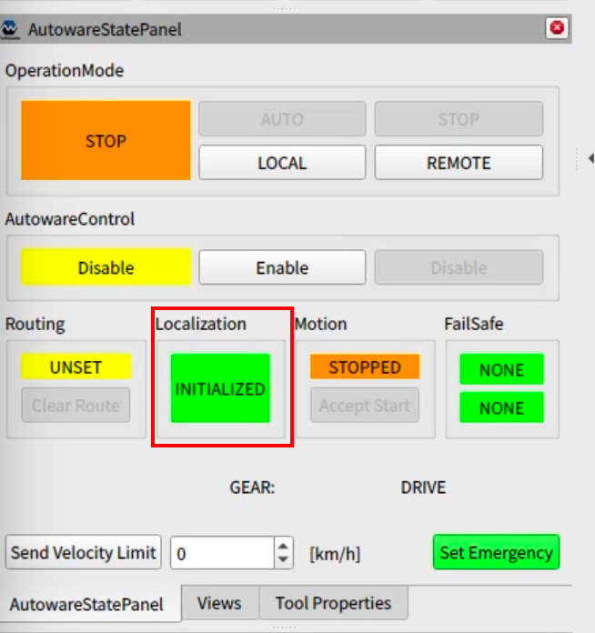
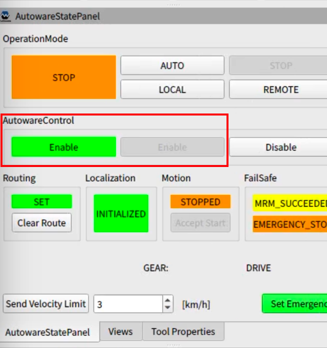
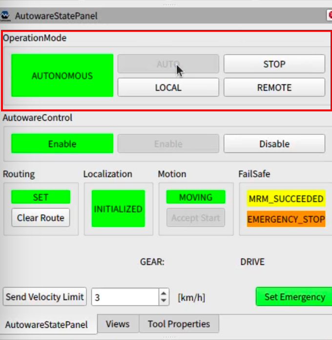

Operation (決勝大会)
注意: このページは作成中です。ページの内容は暫定の情報であり、今後変更される可能性があります。
このページでは、 AutowareをインストールしたノートPCで競技車両(自動運転対応ゴルフカート、以下ゴルフカート)を動かす手順を解説します。
※開発用のレポジトリが/home/autoware/aichallenge2023-integration-finalに配置されている前提で解説しています。
自動運転開始までの手順
このセクションでは、競技の参加者の皆様が開発用ノートパソコンを車両に接続した後、自動運転を開始するまでのフローを説明します。
※車両を動かす前に必ず 安全に関する注意点を一読ください。
(競技参加者)ターミナルを開き、以下のコマンドを実行してAutowareを起動する。
$ cd ~/aichallenge2023-integration-final/scripts $ ./run_autoware_on_vehicle.sh(競技参加者)自己位置推定を開始する。
- 2D pose estimate をrVizから入力する。
AutowareStatePanelのLocalizationの表示がINITIALIZEDとなっていることを確認する。 
(競技参加者)ゴール地点を指定する。
- ターミナルを開き、
~/aichallenge2023-integration-final/scripts/set_goal.shを実行してゴール地点を設定する。 - ゴールに向かう経路が引かれていることをrVizで確認する。
- ターミナルを開き、
(セーフティドライバー)ゴルフカートのモードを
自動モードに設定する。(競技参加者)Autowareによる車両制御を有効化する。
- メンターの指示を受け、
AutowareStatePanelのAutowareControlのEnableボタンをクリックする。 AutowareStatePanelのAutowareControlの表示がEnableになっていることを確認する。 
- メンターの指示を受け、
(セーフティードライバー) ステアの挙動を確認し、ゴルフカードがAutowareの制御を正常に受け付けていることを確認し、Autowareの自動運転モード許可を参加者に伝達する。
(競技参加者)Autowareを自動運転モードに設定する。
- セーフティドライバーに「自動運転開始します」と発話する。
AutowareStatePanelのOperationModeのAUTOボタンをクリックする。AutowareStatePanelのOperationModeの表示がAUTONOMOUSになっていることを確認する。 
オーバーライド（ドライバーが車両を停止させたとき）が発生した場合
自動運転中に縁石への乗り上げや、障害物への接触が予見される場合はセーフティードライバーがブレーキをかけ、車両の制御を自動運転から手動運転に切り替えます。これをオーバーライドといいます。 課題1、 課題2、課題3-1の区間でセーフティードライバーがオーバーライドを行った場合は、以下の手順を経て、次の課題から開始します。
- (セーフティドライバー) オーバーライドした旨を競技参加者に伝達する。
- (セーフティドライバー) ゴルフカートのモードを
手動モードに設定する。 - (セーフティドライバー) 次の課題のスタート地点へ車両を移動する。
- メンターの指示を受け、
AutowareStatePanelのAutowareControlのDisableボタンをクリックする。 AutowareStatePanelのAutowareControlの表示がDisableになっていることを確認する。- 自動運転開始までの手順 4番、 (セーフティドライバー)ゴルフカートのモードを
自動モードに設定する。 から再開する。
安全に関する注意点
- HWの接続不良などが原因で、自動運転モードへの切り替えに失敗することがあります。自動運転モードへの切り替え失敗はセーフティドライバーが判断します。本事象が発生した場合は、メンターの指示に従い自動運転開始までの手順をやり直してください。
- 自動運転走行時、車両に同乗しない参加者は歩道上で待機してください。経路上や車両周囲は立ち入り禁止です。
- 自動運転走行時は必ず上部の手すりを掴んでください。
- 自動運転に使用するノートPCをバンドで固定してください。 キーボードが打ちづらい場合は貸出しているUSB無線キーボードを使用してください。